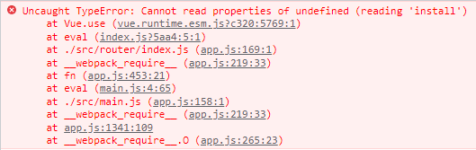

Vue
前言
前后分离的开发思想主要是基于
SOC原则（关注度分离原则）。CSS预处理器
CSS层叠样式表是一门标记语言，并不是编程语言，因此不可以自定义变量、不可以引用等，即不具备任何语法支持，主要缺陷如下：
- 语法不够强大，比如无法嵌套书写，导致模块化开发中需要书写很多重复的选择器。
- 没有变量及合理的样式复用机制，使得逻辑上相关的属性值必须以字面量的形式重复输出，导致难以维护。
这就导致增加了工作量。为了解决该问题，可以使用
CSS预处理器，其提供了CSS缺失的样式复用机制，减少冗余代码，提高样式代码的可维护性及前端在样式上开发的效率。CSS预处理器用一种专门的编程语言，用于进行Web页面样式设计，再通过编译器转换为正常的CSS文件，以供项目使用，常见的有SASS、LESS。
JavaScript框架
- jQuery：优点是简化了DOM操作，缺点是DOM操作太频繁，影响前端性能。
- Angular：特点是将后台的MVC模式搬到了前端并增加了
模块化开发的理念，采用TypeScript语法开发。 - React：特点是提出了
虚拟DOM的概念，用于减少真实DOM操作。在内存中模拟DOM操作，有效的提升了前端渲染效率。缺点是使用复杂，需要学习JSX语言。 - Vue：一款渐进式JavaScript框架。所谓渐进式就是逐步实现新特性的意思，如实现模块化开发、路由、状态管理等新特性。其特点是综合了Angular（模块化）和React（虚拟DOM）的优点。
MV*模式
- MVC（同步通信为主）：Model、View、Controller
- MVP（异步通信为主）：Model、View、Presenter
- MVVM（异步通信为主）：Model、View、ViewModel
简介
Vue.js是一套构建用户界面的渐进式框架，其只关注
视图层，采用自底向上增量开发的设计。核心：数据驱动、组件化。Vue采用
MVVM模式，实现了DOM监听及数据绑定。MVVM源自于经典的MVC模式，其核心是
ViewModel层，负责转换Model中的数据对象来让数据变得更容易管理和使用，作用：向上与视图层进行双向数据绑定，向下与Model层通过接口请求进行数据交互。Model：模型层；View：视图层；ViewModel：连接视图和数据的中间件。
在MVVM架构中，不允许数据和视图直接通信，只能通过ViewModel来通信。ViewModel能够观察到数据的变化，并对视图相应的内容进行更新；能够监听到视图的变化，通知数据发生改变。
CDN引用
起步
每个Vue应用都需要通过实例化Vue来实现，其内部有以下几个参数：
- el：绑定DOM元素的id，即接下来的改动全部在指定的元素内，元素外部不受影响。
- data： 用于定义属性，定义在大括号内。
- methods： 用于定义函数，可通过return来返回函数值。
<div id="app"> |
当一个Vue实例被创建时，它向Vue的响应式系统中加入了其data对象中能找到的所有的属性。当这些属性的值发生改变时，html视图将也会产生相应的变化。
在js中可以直接访问Vue的数据属性，也可以将js对象赋值给Vue中的属性，此时修改对应的属性会相互影响。
除了数据属性，Vue 实例还提供了一些有用的实例属性与方法，它们都有前缀$，以便与用户定义的属性区分开来。例如：
<script type="text/javascript"> |
模板语法
Vue的核心是一个允许采用简洁的模板语法来声明式的将数据渲染进DOM系统。
文本插值：数据绑定最常见的形式就是使用
{{...}}的文本插值。<div id="app">
<p>{{message}}</p>
</div>使用
v-html指令用于输出html代码，使用v-text输出纯文本。<div id="app">
<div v-html=message></div>
</div>
<script type="text/javascript">
new Vue({
el: '#app',
data: {
message: '<h1>v-html</h1>'
}
})
</script>使用
v-bind设置标签属性值。<div id="app">
<div style="width: 100px; height: 100px; background-color: #B2D1FF;" v-bind:style="{'border': message}"></div>
</div>
<script type="text/javascript">
var vm = new Vue({
el: '#app',
data: {
message: "1px solid red"
}
})
</script>作用于类上，当属性值为true时，添加该类名，否则不添加。
<div id="app">
<div v-bind:class="{'class1': use}">...</div>
</div>
<script type="text/javascript">
new Vue({
el: '#app',
data:{
use: false
}
})
</script>支持缩写：
:属性名，例如：v-bind:href="url" => :href="url"。表达式：Vue提供了完全的JavaScript表达式支持。
<div id="app">
{{5+5}}<br>
{{ ok ? 'YES' : 'NO' }}<br>
{{ message.split('.')}}
<div v-bind:id="'list-' + id">测试</div>
</div>
<script type="text/javascript">
new Vue({
el: '#app',
data: {
ok: true,
message: 'abc.abc',
id : 1
}
})
</script>表达式会在所属Vue实例的数据作用域下作为JavaScript被解析。需要注意的是，每个绑定都只能包含
单个表达式，所以下面的例子都不会生效。<!-- 这是语句，不是表达式 -->
{{ var a = 1 }}
<!-- 流控制也不会生效，请使用三元表达式 -->
{{ if (ok) { return message } }}过滤器：Vue允许用户自定义过滤器，被用作一些常见的文本格式化（即输出前先对文本其进行格式化），由管道符
|指示。过滤器函数接受表达式的值作为第一个参数。以下实例对输入的字符串第一个字母转为大写：<div id="app">
{{ message | capitalize }}
</div>
<script type="text/javascript">
new Vue({
el: '#app',
data: {
message: 'runoob'
},
filters: {
capitalize: function (value) {
if (!value) return ''
value = value.toString()
return value.charAt(0).toUpperCase() + value.slice(1)
}
}
})
</script>在v-bind指令中使用过滤器实例：
<div v-bind:id="rawId | formatId"></div>。过滤器串联：
{{ message | filterA | filterB }}过滤器是JavaScript函数，因此可以接受参数：
{{ message | filterA('arg1', arg2) }}。此时message是第一个参数，字符串arg1是第二个参数，arg2表达式的值将被求值然后传给过滤器作为第三个参数。
条件语句
条件判断：使用v-if、v-else-if、v-else指令，根据表达式的值（true或false）来决定渲染哪个元素。
<div id="app"> |
显示与隐藏：使用v-show指令根据表达式的值来切换元素的display属性，即true时显示，false时隐藏，隐藏时display的值为none。
<div id="app"> |
循环语句
循环使用v-for指令，语法：v-for="site in sites"， 其中：sites是源数据数组，site是数组元素迭代的别名。
迭代数组
<div id="app"> |
添加第二个参数获取数组下标：
v-for="(item,index) in list"
迭代对象（遍历对象属性）
<div id="app"> |
此时迭代的结果是获取对象的属性值。可提供第二个参数用于获取键，提供第三个参数用于获取索引，即：
v-for="(value, key, index) in object"
迭代整数
<div id="app"> |
样式绑定
v-bind可以用来设置class或style，其在处理class和style时，表达式的结果类型除了字符串之外，还可以是对象或数组。
class绑定
绑定数据中的一个对象
<div id="app">
<div v-bind:class=classObject></div>
</div>
<script type="text/javascript">
new Vue({
el: '#app',
data: {
classObject: {
active: true,
'text-danger': true
}
}
})
</script>若属性中存在
-，例如：text-danger，此时需要加上””，否则会报错。绑定计算属性，该计算属性返回值是一个对象
<div id="app">
<div v-bind:class=classObject></div>
</div>
<script type="text/javascript">
new Vue({
el: '#app',
computed: {
classObject: function () {
return {
base: true
}
}
}
})
</script>绑定数组
<div id="app">
<div v-bind:class="[activeClass, errorClass]"></div>
<!-- <div class="active text-danger"></div> -->
<!-- 可以使用三元表达式来切换列表中的class -->
<div v-bind:class="[errorClass, isActive ? activeClass : '']"></div>
</div>
<script type="text/javascript">
new Vue({
el: '#app',
data: {
isActive: true,
activeClass: 'active',
errorClass: 'text-danger'
}
})
</script>
style绑定（内联样式）
直接设置样式
<div id="app">
<div v-bind:style="{color: activeColor, fontSize: fontSize + 'px' }">测试</div>
</div>
<script type="text/javascript">
new Vue({
el: '#app',
data: {
activeColor: 'green',
fontSize: 30
}
})
</script>绑定样式对象
<div id="app">
<div v-bind:style=styleObject>测试</div>
</div>
<script type="text/javascript">
new Vue({
el: '#app',
data: {
styleObject: {
color: 'green',
fontSize: '30px'
}
}
})
</script>使用数组将多个样式对象应用到一个元素上
<div id="app">
<div v-bind:style="[baseStyles, overridingStyles]">测试</div>
</div>
<script type="text/javascript">
new Vue({
el: '#app',
data: {
baseStyles: {
color: 'green',
fontSize: '30px'
},
overridingStyles: {
'font-weight': 'bold'
}
}
})
</script>
计算属性
计算属性重点突出在属性二字上（属性是名词）。首先它是一个属性，其次这个属性有计算的能力（计算是动词），这里的计算就是个函数。简单点说，它就是一个能够将计算结果缓存起来的属性，仅此而已，可以想象为缓存。
计算属性关键字：computed，在处理一些复杂逻辑时比较有用。示例：
<div id="app"> |
声明了一个计算属性reversedMessage（使用时不能加()），提供的函数将用作属性 vm.reversedMessage的getter。vm.reversedMessage依赖于vm.message，在vm.message发生改变时，vm.reversedMessage也会更新。
computed vs methods
可以使用methods来替代computed，效果上两个都是一样的，但是computed是基于它的依赖缓存，只有相关依赖发生改变时才会重新取值。而使用methods，在重新渲染的时候，函数总会重新调用执行。可以说使用computed性能会更好，但是如果不希望缓存，可以使用methods。
与methods对比：调用方法时，每次都需要进行计算，会产生系统开销。如果这个结果是不经常变化的，此时就可以考虑将这个结果缓存起来，采用计算属性可以很方便的做到这一点。计算属性的主要特性就是为了将不经常变化的计算结果进行缓存，以节约系统开销。
computed setter
computed属性默认只有getter，不过在需要时也可以提供一个setter，示例：
<div id="app"> |
监听属性
监听属性watch，可以通过该属性来响应数据的变化。示例：
<div id = "app"> |
该函数的
参数顺序固定，第一个参数获取新值，第二个参数获取旧值。
事件处理器
事件监听
使用v-on指令，可以绑定一个表达式或者方法。支持缩写：@事件名="..."。
<div id="app"> |
当存在其他参数时需要获取事件对象，此时需要传递event。
<!--<button v-on:click="greet('good',event)">Greet</button>-->
method:{
greet: function (mes,event) {...}
}
事件修饰符
Vue为v-on提供了事件修饰符来处理DOM事件细节，通过由点.表示的指令后缀来调用修饰符。
- stop —— 阻止冒泡
- prevent —— 阻止默认事件
- capture —— 阻止捕获
- self —— 只监听触发该元素的事件
- once —— 只触发一次
- left —— 左键事件
- right —— 右键事件
- middle —— 中间滚轮事件
<!-- 阻止单击事件冒泡 --> |
按键修饰符
Vue允许为v-on在监听键盘事件时添加按键修饰符，可以使用KeyCode或按键别名。
<!-- 只有在keyCode是13时调用vm.submit() --> |
全部的按键别名：enter、tab、delete、esc、space、up、down、left、right、ctrl、alt、shift、meta。
表单
双向绑定
使用v-model指令在表单控件元素（输入框、文本框、单选框、复选框、下拉列表）上创建双向数据绑定，v-model会根据控件类型自动选取正确的方法来更新元素。
输入框：加载时数据会显示在输入框中。
<div id="app">
<input v-model="message" placeholder="编辑我……">
<p>消息是: {{ message }}</p>
</div>
<script type = "text/javascript">
new Vue({
el: '#app',
data: {
message: 'Runoob'
}
})
</script>单选按钮
<div id="app">
<input type="radio" id="runoob" value="Runoob" v-model="picked">
<label for="runoob">Runoob</label>
<br>
<input type="radio" id="google" value="Google" v-model="picked">
<label for="google">Google</label>
<br>
<span>选中值为: {{ picked }}</span>
</div>
<script type = "text/javascript">
new Vue({
el: '#app',
data: {
picked : 'Runoob'
}
})
</script>复选框：如果是一个则为逻辑值，如果是多个则绑定到
同一数组上。<div id="app">
<p>单个复选框：</p>
<input type="checkbox" id="checkbox" v-model="checked">
<label for="checkbox">{{ checked }}</label>
<p>多个复选框：</p>
<input type="checkbox" id="runoob" value="Runoob" v-model="checkedNames">
<label for="runoob">Runoob</label>
<input type="checkbox" id="google" value="Google" v-model="checkedNames">
<label for="google">Google</label>
<input type="checkbox" id="taobao" value="Taobao" v-model="checkedNames">
<label for="taobao">taobao</label>
<br>
<span>选择的值为: {{ checkedNames }}</span>
</div>
<script type = "text/javascript">
new Vue({
el: '#app',
data: {
checked : false,
checkedNames: []
}
})
</script>select列表
<div id="app">
<select v-model="selected">
<option value="">选择一个网站</option>
<option value="www.runoob.com">Runoob</option>
<option value="www.google.com">Google</option>
</select>
<div>选择的网站是: {{selected}}</div>
</div>
<script type = "text/javascript">
new Vue({
el: '#app',
data: {
selected: ''
}
})
</script>
v-model会忽略任何表单元素上初始的value、checked或selected attribute。它将始终将当前绑定的JavaScript状态视为正确来源，应在JavaScript中使用data选项来声明该初始值。
如果v-model表达式的初始值
不匹配任何一个选择项，<select>元素会渲染成一个“未选择”的状态。在iOS上，这将导致用户无法选择第一项，因为iOS在这种情况下不会触发一个change事件。因此，建议提供一个空值的禁用选项：<option disabled value="">--请选择--</option>
修饰符
.lazy：在默认情况下，v-model在input事件中同步输入框的值与数据，但可添加修饰符lazy，从而转变为在change事件中同步，即触发change事件时再进行更新。<input v-model.lazy="msg" >
.number：如果想自动将用户的输入值转为Number类型（如果原值的转换结果为NaN则返回原值），可以添加修饰符number来处理输入值。<input v-model.number="age" type="text">
相当于调用 parseInt()，如果转换结果为NaN则返回原值。
.trim：如果要自动过滤用户输入的首尾空格，可以添加trim修饰符到v-model上过滤输入。<input v-model.trim="msg">
组件
声明组件
<script type = "text/javascript"> |
使用props属性给组件传递数据
<component v-for="item in items" v-bind:item="item"></component> |
v-for=”item in items”：指遍历Vue实例中名为items的数组，并创建同等数量的组件。
v-bind:item=”item”：指将遍历的item绑定到组件中props定义的名为item属性上（相当于将右侧的item的值传递给组件props属性中名为item的变量），此时等号左边的”item”为props定义的属性名，右边的”item”为遍历得到的item。
props属性中的值
不能大写。
插槽
在Vue中使用<slot>元素作为承载分发内容的出口，称其为“插槽”，可以应用在组合组件的场景中。插槽相当于在组件中渲染模板内容。示例：定义课程列表组件（todo），该组件由标题（todo-title）和内容（todo-items）组成，但三个组件又相互独立。步骤：
- 定义课程列表组件，要实现其标题和内容动态绑定，可以在其中预留插槽，即slot；
- 定义标题和内容组件；
- 对应绑定。
<div id="app"> |
todo-title和todo-items组件分别被分发到了todo组件的todo-title和todo-items插槽中。
自定义事件
在组件中操作Vue实例的数据项，即调用实例中的方法，需要使用到自定义事件（组件中不能直接使用Vue实例中的方法）：this.$emit(自定义事件名, 参数)。当自定义事件被触发时，会调用Vue实例中对应的方法。示例：
<div id="app"> |
Axios异步通信
Vue使用axios来完成 ajax 请求。
<script src="https://unpkg.com/axios/dist/axios.min.js"></script> |
Get请求示例
axios.get('https://www.runoob.com/try/ajax/demo_axios_post.php') |
Post请求示例
axios.post('https://www.runoob.com/try/ajax/demo_axios_post.php') |
第一种携带数据的post请求，在传递参数时
存在问题：前端能传递参数，但后端接收不到，此时需要引入qs。更多解决post传参问题的方法可参考：https://blog.csdn.net/lihchweb/article/details/79884134
Vue的生命周期
钩子函数使用示例：
mounted(){ |
Vue-cli
vue-cli是官方提供的一个脚手架，用于快速生成一个vue的项目模板，其有预先定义好的目录结构及基础代码，就好比创建Maven项目时可以选择创建一个骨架项目，这个骨架项目就是脚手架，可以使我们的开发更加的快速。主要功能：
- 统一的目录结构
- 本地调试
- 热部署
- 单元测试
- 集成打包上线
环境需求
Node.js：http://nodejs.cn/download/
安装时选择自己的安装目录，无脑下一步即可。可通过命令行确认node.js是否安装成功：
# 查看node.js版本号
node -v
# 查看npm版本号
# npm是一个软件包管理工具
npm -v安装node.js淘宝镜像加速器cnpm
# -g 指全局安装
npm install cnpm -g
# 或使用如下语句解决npm速度慢的问题，
npm install --registry=http://registry.npm.taobao.org安装位置：C:\Users\Administrator\AppData\Roaming\npm
vue-cli的使用
安装vue-cli：npm install -g @vue/cli
检查版本：vue –version
创建项目：vue create 项目名
此时先创建一个空文件夹，并在cmd中进入该文件夹，再使用此命令，方便找到创建的项目。
启动项目：npm run serve
npm命令解释
- npm install moduleName：安装模块到项目目录下。
- npm install -g moduleName：-g的意思是将模块安装到全局，具体安装到磁盘哪个位置要看npm config prefix的位置。
- npm install –save moduleName：-–save的意思是将模块安装到项目目录下，并在package文件的dependencies节点写入依赖，-S为该命令的缩写。
- npm install –save-dev moduleName：-–save-dev的意思是将模块安装到项目目录下，并在package文件的devDependencies节点写入依赖，-D为该命令的缩写。
webpack
本质上，webpack是一个现代JavaScript应用程序的静态模块打包器（module bundler）。当webpack处理应用程序时，它会递归的构建一个依赖关系图，其中包含应用程序需要的每个模块，然后将所有这些模块打包成一个或多个bundle。安装及测试：
# 安装 |
vue-router
官方文档：https://router.vuejs.org/zh/introduction.html
使用npm或cnpm为项目安装vue-router。在命令行中进入对应的项目中，输入：
cnpm install vue-router --save-dev |
如果要在一个模块化工程中使用它，必须通过Vue.use()明确安装路由功能。
import Vue from 'vue' |
使用后可能会由于vue-router版本过高而Vue版本过低，即vue-router对应的Vue为3.0以上而出错，此时运行
cnpm i vue-router@3.1.3即可。或者开始时直接使用yarn add vue-router@3。
使用示例
删除多余文件，在components中存放自己的组件。定义一个Content.Vue组件：
<template>
<h1>当前为内容页</h1>
</template>
<script>
export default {
// eslint-disable-next-line vue/multi-word-component-names
// 上方语句用于解决报错，Alt+Enter
name: "content"
}
</script>
<!-- 添加“scoped”属性来限制CSS仅用于此组件 -->
<style scoped>
</style>模板根只需要一个元素，即一个标签，该标签中包含内容，可在外侧用一个<div>包裹所有内容。
安装路由：在src目录下创建
router文件夹，专门存放路由。在该文件夹中创建index.js，用于编写主配置。index.js内容如下：import Vue from 'vue'
// 导入路由组件
import VueRouter from 'vue-router'
// 导入自定义的组件
import Content from '../components/Content'
// 安装路由
Vue.use(VueRouter)
// 配置路由，可配置多个
export default new VueRouter({
routes: [
{
// 路由路径，相当于跳转链接
path: '/content',
// 路由名称，可省略
name: 'Content',
// 跳转到组件
component: Content
}
]
})在main.js中配置路由
import Vue from 'vue'
import App from './App.vue'
// 导入上面创建的路由配置目录，会自动扫描路由配置index.js
import router from './router'
// 关闭生产模式下给出的提示
Vue.config.productionTip = false
new Vue({
render: h => h(App),
// 配置路由
router
}).$mount('#app')在App.vue中使用路由
<template>
<div id="app">
<h1>路由测试</h1>
<!--
router-link: 默认会被渲染成一个<a>标签，to属性用于指定链接
router-view: 用于渲染路由匹配到的组件
-->
<router-link to="/content">内容</router-link>
<router-view></router-view>
</div>
</template>router-link相当于<a>标签，会被渲染成一个超链接，它需要配合router-view使用，此时其对应组件的内容会在router-view中显示。若单独使用router-link，则内容无法显示。也可直接在地址栏中输入对应链接，即省略router-link，此时router-view中也会显示组件对应的内容。
Vue结合ElementUI
安装
# 安装element-ui |
使用示例
在项目src目录下创建views文件夹，用于存放Vue视图组件，而原有的components文件夹用于存放Vue功能组件。在views目录下创建首页视图Main.vue组件。
<template>
<h1>首页</h1>
</template>
<script>
export default {
// eslint-disable-next-line vue/multi-word-component-names
name: "Main"
}
</script>
<style scoped>
</style>在views目录下创建登录页面视图Login.vue组件。
<template>
<div>
<el-form ref="loginForm" :model="form" :rules="rules" label-width="80px" class="login-box">
<h3 class="login-title">欢迎登录</h3>
<el-form-item label="账号" prop="username">
<el-input type="text" placeholder="请输入账号" v-model="form.username"/>
</el-form-item>
<el-form-item label="密码" prop="password">
<el-input type="password" placeholder="请输入密码" v-model="form.password"/>
</el-form-item>
<el-form-item>
<el-button type="primary" v-on:click="onSubmit('loginForm')">登录</el-button>
</el-form-item>
</el-form>
</div>
</template>
<script>
export default {
// eslint-disable-next-line vue/multi-word-component-names
name: "Login",
data(){
return{
form:{
username:'',
password:''
},
// 表单验证，需要在el-form-item元素中增加prop属性
rules:{
username:[
{required:true,message:"账号不可为空",trigger:"blur"}
],
password:[
{required:true,message:"密码不可为空",tigger:"blur"}
]
}
}
},
methods:{
onSubmit(formName){
// 为表单绑定验证功能
this.$refs[formName].validate((valid)=>{
if(valid){
// 使用vue-router路由到指定界面，该方式称为编程式导航
this.$router.push('/main');
}else{
return false;
}
});
}
}
}
</script>
<style lang="scss" scoped>
.login-box{
border:1px solid #DCDFE6;
width: 350px;
margin:180px auto;
padding: 35px 35px 15px 35px;
border-radius: 5px;
-webkit-border-radius: 5px;
-moz-border-radius: 5px;
box-shadow: 0 0 25px #909399;
}
.login-title{
text-align:center;
margin: 0 auto 40px auto;
color: #303133;
}
</style>router目录下创建一个名为
index.js的vue-router路由配置文件。import Vue from 'vue'
import VueRouter from 'vue-router'
import Login from '@/views/Login'
import Main from "@/views/Main";
Vue.use(VueRouter)
export default new VueRouter({
routes: [
{
path: '/login',
component: Login
},
{
path: '/main',
component: Main
}
]
})在
main.js中配置路由及ElementUI。import Vue from 'vue'
import App from './App.vue'
import router from './router'
// 引入Element
import ElementUI from 'element-ui';
import 'element-ui/lib/theme-chalk/index.css';
Vue.config.productionTip = false
Vue.use(ElementUI);
new Vue({
render: h => h(App),
router
}).$mount('#app')编写APP.vue
<template>
<div id="app">
<router-view></router-view>
</div>
</template>
路由嵌套
嵌套路由又称子路由，在实际应用中，通常由多层嵌套的组件组合而成。同样的，URL中各段动态路径也按某种结构对应嵌套着各层组件，例如：

使用示例
- 创建用户信息组件：在views/user目录下创建一个名为Profile.vue的视图组件。
<template> |
- 创建用户列表组件：在views/user目录下创建一个名为List.vue的视图组件。
<template> |
- 修改Main.vue视图组件。
<template> |
- 修改路由配置
import Vue from 'vue' |
路由跳转后组件内容会显示在router-view中，此时如果其组件内部也存在路由跳转链接router-link，则需要配置子路由。若此时未配置子路由，则无法在当前组件对应区域显示跳转组件内容，相应内容会显示在App.vue中的router-view中，相当于普通的路由跳转。
参数传递和重定向
参数传递
修改router/index.js配置，为path属性增加
:id占位符。{
path: '/user/profile/:id',
name: 'Profile',
component: Profile
}传递参数
<!--
name：绑定组件的名字
params：指需要传递的参数，两个地方的参数名需一致
-->
<router-link :to="{name: 'Profile', params: {id:1}}">个人信息</router-link>传递参数时需要使用
v-bind来绑定，即：v-bind:to="{name: 组件名, params: {...}}"或:to="{name: 组件名, params: {...}}"。组件接收参数
<template>
<div>
<h1>用户信息</h1>
{{$route.params.id}}
</div>
</template>另一种参数传递方式：使用props减少耦合
修改router/index.js配置，为路由增加
props: true属性。{
path: '/user/profile/:id',
name: 'Profile',
component: Profile,
props: true
}传递参数和之前一样。在接收参数的组件中，增加props属性。
<template>
<div>
<h1>用户信息</h1>
{{id}}
</div>
</template>
<script>
export default {
// eslint-disable-next-line vue/multi-word-component-names
name: "Profile",
props: ['id']
}
</script>
重定向
作用于路径不同但组件相同的情况，即不同路径可跳转到相同组件。
修改router/index.js配置，添加重定向路径。
{
path: '/main',
name: 'Main',
component: Main
},
{
path: '/goHome',
redirect: '/main'
}修改Main.vue
<el-menu-item index="1-3">
<router-link to="/goHome">返回首页</router-link>
</el-menu-item>
路由模式
路由模式有两种：
- hash：路径带#，默认，如：http://localhost:8080/#/login
- history：路径不带#，如：http://localhost:8080/login
可通过修改路由配置router/index.js进行切换：
export default new VueRouter({ |
404页面
创建一个NotFound.vue视图组件
<template> |
修改路由配置router/index.js
... |
路由钩子
除了钩子函数（mounted）外，还存在两个钩子函数：
- beforeRouteEnter：在进入路由前执行。
- beforeRouteLeave：在离开路由前执行。
测试：在Profile.vue组件中使用
export default { |
参数说明：
- to：路由将要跳转的路径信息；
- from：路径跳转前的路径信息；
- next：路由的控制参数。
- next()：跳入下一个页面；
- next(’/path’)：改变路由的跳转方向，使其跳到另一个路由；
- next(false)：返回原来的页面；
- next((vm)=>{})：仅在
beforeRouteEnter中可用，vm是组件实例。
在钩子函数中使用异步请求
- 安装Axios
cnpm install axios -s |
- 在main.js中应用Axios
import axios from 'axios' |
- 准备数据
{ |
只有
public目录下的文件可以被访问，因此把静态资源放入该文件夹下。例如：public/mock/data.json，访问地址：http://localhost:8080/mock/data.json
- 在beforeRouteEnter中进行异步请求
export default { |
其他
创建项目的另一种方式
# 创建项目并初始化 |
依赖整理
bootstrap
cnpm install bootstrap@5.3.0-alpha1
// main.js
import 'bootstrap/dist/css/bootstrap.css'
import 'bootstrap/dist/js/bootstrap.bundle'elementUI
cnpm i element-ui -S
# npm install sass-loader node-sass --save-dev// mian.js
import ElementUI from 'element-ui'
import 'element-ui/lib/theme-chalk/index.css'
Vue.use(ElementUI)axios
cnpm install axios -s
// mian.js
import axios from 'axios'
Vue.prototype.axios = axios
// 组件使用时还需要导入
import axios from "axios";vue-router
cnpm i vue-router@3.1.3
// src/router/index.js
import Vue from 'vue'
import VueRouter from 'vue-router'
Vue.use(VueRouter)
export default new VueRouter({
routes: []
})// mian.js
...
import router from './router'
new Vue({
router,
render: (h) => h(App)
}).$mount('#app')vue-cookies
cnpm install vue-cookies
// main.js
import VueCookies from 'vue-cookies'
Vue.use(VueCookies)base64加密
cnpm install --save js-base64
// 组件
import { Base64 } from 'js-base64';表情
cnpm install --save emoji-mart-vue
// 组件
import { Picker } from "emoji-mart-vue";时间格式化
cnpm install moment --save
// 组件
import moment from 'moment'图片展示
cnpm i vue-photo-collage
// 组件
import { PhotoCollageWrapper } from 'vue-photo-collage'md读取
cnpm install marked -s
cnpm install highlight.js// 组件
import { marked } from "marked";
import hljs from 'highlight.js';
import 'highlight.js/styles/default.css';图表绘制
cnpm install echarts
cnpm install echarts-wordcloud// 组件
import * as echarts from "echarts";
import 'echarts-wordcloud';mapbox地图插件
cnpm install --save mapbox-gl
cnpm install --save mapbox-gl @mapbox/mapbox-gl-language// main.js
import 'mapbox-gl/dist/mapbox-gl.css'
// 组件
import mapboxgl from "mapbox-gl";
import MapboxLanguage from '@mapbox/mapbox-gl-language';
.jpg)
.jpg)
.jpg)
.jpg)